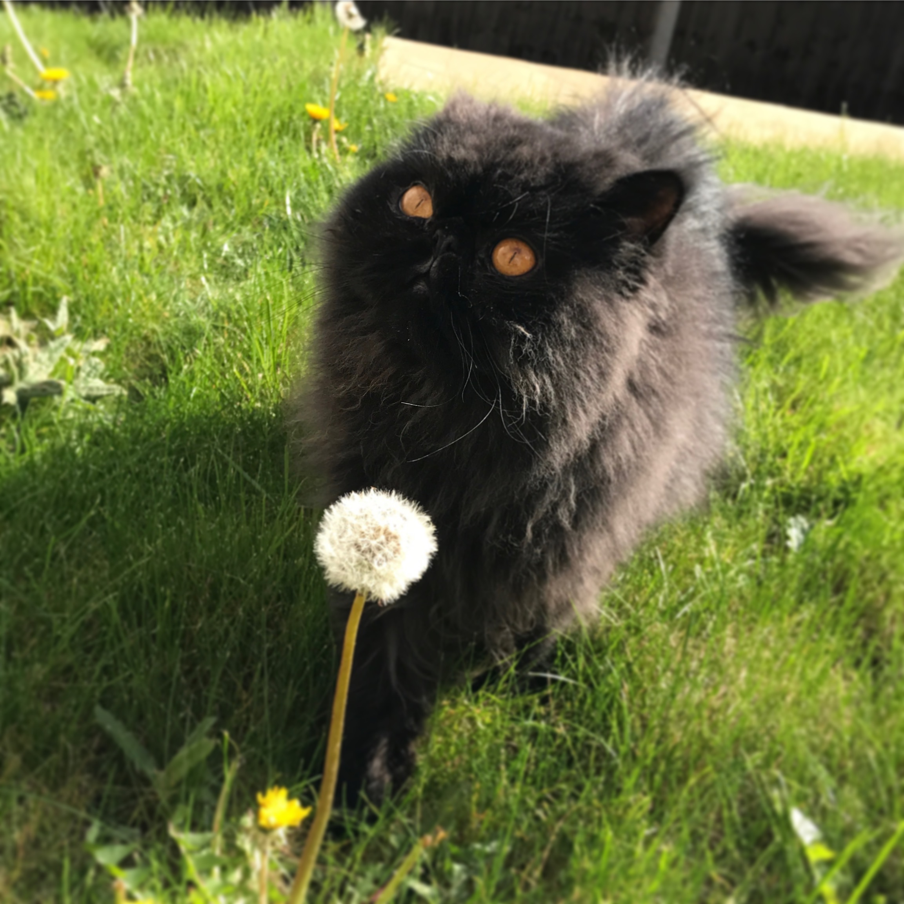

I'm Becky, and you've arrived at my first website! Feel free to have a look around, I've included some useful information about some of my passions, and a brief introduction to my "Learning to Code" journey.
I love vegetarian food, experimenting with recipes and creating new versions of dishes I enjoy.
Here are a selection of some of my favourites:
And here are some pictures of my cats! Right: Pudding to the right and Pixel below. One day they'll have their own instagram account!